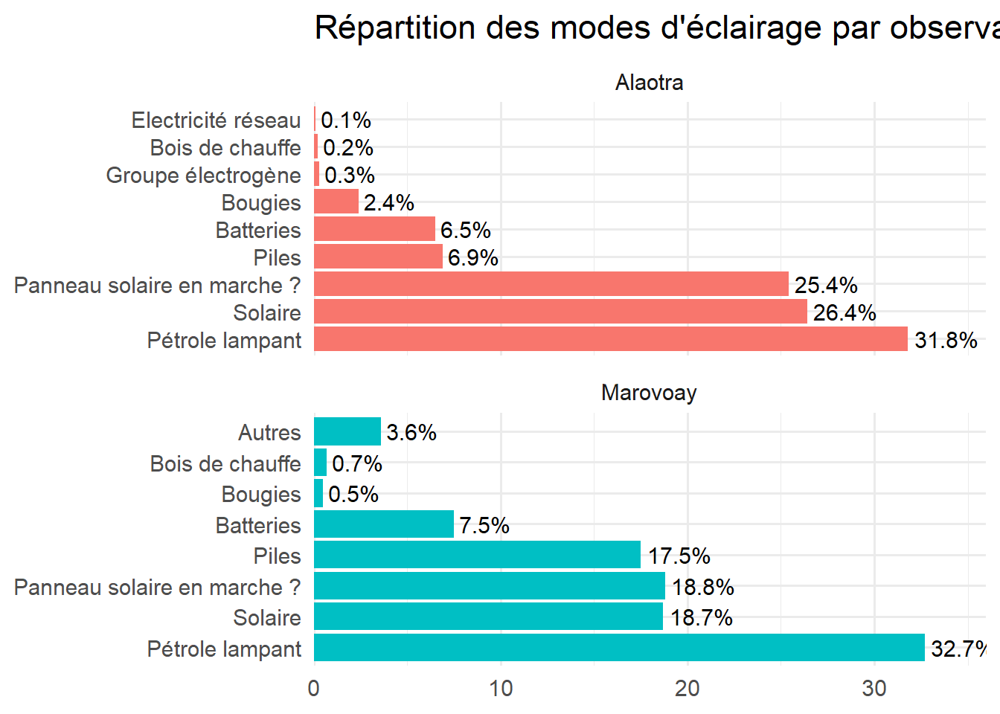
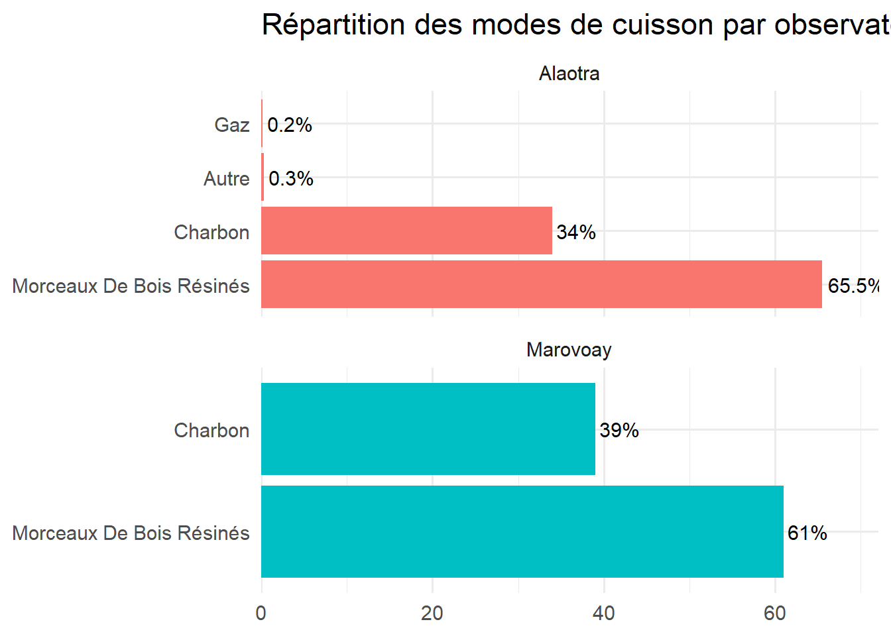

On s’intéresse ici aux conditions d’habitat, aux actifs du ménage et à son accès aux services essentiels. Nous allons charger les données de l’habitat et niveau de vies.
Code
library(tidyverse)library(haven)library(dplyr)library (gt) # Easily create presentation - ready display tableslibrary(ggplot2)library(forcats)library(stringr)library(labelled)# Loading observatories datares_deb <-read_dta("data/res_deb.dta")# Loading household datares_m_a <-read_dta("data/res_m_a.dta")# Loading habitat data including kitchen (h)res_h <-read_dta("data/res_h.dta") # year, j5 # Loading indicateur de confort (v), equipement , communication (tm1, ut1, snw), equipement agricole (e0) datares_v <-read_dta("data/res_v.dta") # year, j5 res_e <-read_dta("data/res_E.dta") # year, j5 # Equipement module next part
3.1 Habitat
3.1.1 Accès au logement d’habitation
Code
# Statut d'occupation du logement par observatoirehouse_status <- res_h %>%left_join(res_deb, by ="j5") %>%group_by(j0, h0) %>%summarise(n =n(), .groups ="drop") %>%mutate(j0 =as.character(j0),Observatory =case_when( j0 =="3"~"Marovoay", j0 =="21"~"Alaotra",TRUE~ j0 ),# Extraire les labels des activités et corriger l'encodagestatut =iconv(as.character(labelled::to_factor(h0)), from ="latin1", to ="UTF-8"),statut =gsub("'", "'", statut, fixed =TRUE) ) %>%group_by(Observatory) %>%mutate(Total =sum(n),Percentage =round(100* n / Total, 1) ) %>%select(Observatory, statut, n, Percentage) %>%ungroup()# Ajouter les lignes "Total" par observatoirehouse_status <-bind_rows( house_status, house_status %>%group_by(Observatory) %>%summarise(statut ="Total",n =sum(n),Percentage =100,.groups ="drop" )) %>%arrange(Observatory, desc(statut =="Total"))# Ajouter une ligne "Total global"house_status <-bind_rows( house_status, house_status %>%summarise(Observatory ="Total global",statut ="Total",n =sum(n),Percentage =100,.groups ="drop" ))# Créer un tableau formaté avec gthouse_status %>%gt(rowname_col ="statut") %>%tab_header(title ="Statut d'occupation du logement par observatoire" ) %>%fmt_number(columns =c(n),sep_mark =" ",decimals =0 ) %>%fmt_number(columns =c(Percentage),decimals =1 ) %>%cols_label(n ="Nombre",Percentage ="%" )
Statut d'occupation du logement par observatoire
Observatory
Nombre
%
Total
Alaotra
507
100.0
En propriété
Alaotra
376
74.2
En location
Alaotra
51
10.1
Prêtée
Alaotra
80
15.8
Total
Marovoay
519
100.0
En propriété
Marovoay
457
88.1
En location
Marovoay
32
6.2
Prêtée
Marovoay
30
5.8
Total
Total global
2 052
100.0
Code
# Camembert display house_status %>%filter(Observatory %in%c("Marovoay", "Alaotra"), statut !="Total") %>%ggplot(aes(x ="", y = Percentage, fill = statut)) +geom_bar(width =1, stat ="identity") +coord_polar("y") +geom_text(aes(label =paste0(Percentage, "%")),position =position_stack(vjust =0.5)) +facet_wrap(~Observatory) +labs(title ="Répartition (%) des ménages par statut d'occupation selon l'observatoire") +theme_void() +theme(legend.title =element_blank(),plot.title =element_text(hjust =0.5))
3.1.2 Nombres de chambres
3.1.3 mur
3.1.4 tafo
3.1.5 gorodona
3.1.6 Type de latrine
Code
# Calcul des types de latrine par observatoirelatrine_type <- res_h %>%mutate(h5_factor = haven::as_factor(h5),type =iconv(as.character(h5_factor), from ="latin1", to ="UTF-8"),Type =gsub("'", "'", type, fixed =TRUE) ) %>%left_join(res_deb, by ="j5") %>%mutate(j0 =as.character(j0),Observatory =case_when( j0 =="3"~"Marovoay", j0 =="21"~"Alaotra",TRUE~ j0 ) ) %>%group_by(Observatory, Type) %>%summarise(n =n(), .groups ="drop") %>%group_by(Observatory) %>%mutate(Total =sum(n),Percentage_raw =100* n / Total,Percentage =round(Percentage_raw, 1) ) %>%ungroup()# Ajouter les lignes "Total" par observatoirelatrine_type <-bind_rows( latrine_type, latrine_type %>%group_by(Observatory) %>%summarise(Type ="Total",n =sum(n),Percentage_raw =100,Percentage =100,.groups ="drop" )) %>%arrange(Observatory, desc(n))# Ajouter une ligne "Total global"latrine_type <-bind_rows( latrine_type, latrine_type %>%summarise(Observatory ="Total global",Type ="Total",n =sum(n),Percentage_raw =100,Percentage =100,.groups ="drop" ))# Tableau formaté avec gt (sans colonnes Total et Percentage_raw)latrine_type %>%select(Observatory, Type, n, Percentage) %>%# ⚠️ on garde seulement les colonnes utilesarrange(Observatory, desc(Percentage)) %>%gt(rowname_col ="Observatory") %>%tab_header(title ="Types de latrine par observatoire" ) %>%fmt_number(columns =c(n),sep_mark =" ",decimals =0 ) %>%fmt_number(columns =c(Percentage),decimals =1 ) %>%cols_label(Type ="Type de latrine",n ="Nombre",Percentage ="%" ) %>%tab_source_note(source_note =md("**Source : Enquête auprès des OR 2025**"))
Types de latrine par observatoire
Type de latrine
Nombre
%
Alaotra
Total
507
100.0
Alaotra
Fosse perdue en commun
340
67.1
Alaotra
Fosse perdue en individuel
126
24.9
Alaotra
Dans la nature
35
6.9
Alaotra
Fosse septique en commun
3
0.6
Alaotra
Fosse septique en individuel
3
0.6
Marovoay
Total
519
100.0
Marovoay
Dans la nature
250
48.2
Marovoay
Fosse perdue en commun
131
25.2
Marovoay
Fosse perdue en individuel
131
25.2
Marovoay
Fosse septique en individuel
4
0.8
Marovoay
Fosse septique en commun
3
0.6
Total global
Total
2 052
100.0
Source : Enquête auprès des OR 2025
Code
# Camembert par observatoire (parts ordonnées par fréquence décroissante en pourcentage)latrine_type %>%filter(Observatory %in%c("Marovoay", "Alaotra"), Type !="Total") %>%arrange(Observatory, desc(Percentage)) %>%ggplot(aes(x =1, y = Percentage, fill =fct_reorder(Type, -Percentage))) +geom_bar(width =1, stat ="identity") +coord_polar("y") +geom_text(aes(label =paste0(Percentage, "%")),position =position_stack(vjust =0.5)) +facet_wrap(~Observatory) +labs(title ="Types de latrine par observatoire") +scale_fill_brewer(palette ="Set3") +# palette harmoniséetheme_void() +theme(legend.title =element_blank(),plot.title =element_text(hjust =0.5))
3.1.7 Accès à l’eau de source améliorée et à l’électricité
3.1.7.1 Mode d’approvisionnement en eau
Code
# Calcul des modes d'approvisionnement en eau par observatoirewater_access <- res_h %>%mutate(h4_factor = haven::as_factor(h4),type =as.character(h4_factor),type_utf8 =iconv(type, from ="latin1", to ="UTF-8", sub =""), # conversion robuste en UTF-8Type =gsub("'", "'", type_utf8, fixed =TRUE) # remplacement des entités HTML ) %>%left_join(res_deb, by ="j5") %>%mutate(j0 =as.character(j0),Observatory =case_when( j0 =="3"~"Marovoay", j0 =="21"~"Alaotra",TRUE~ j0 ) ) %>%group_by(Observatory, Type) %>%summarise(n =n(), .groups ="drop") %>%group_by(Observatory) %>%mutate(Total =sum(n),Percentage_raw =100* n / Total,Percentage =round(Percentage_raw, 1) ) %>%ungroup()# Ajouter les lignes "Total" par observatoirewater_access <-bind_rows( water_access, water_access %>%group_by(Observatory) %>%summarise(Type ="Total",n =sum(n),Percentage_raw =100,Percentage =100,.groups ="drop" )) %>%arrange(Observatory, desc(n))# Ajouter une ligne "Total global"water_access <-bind_rows( water_access, water_access %>%summarise(Observatory ="Total global",Type ="Total",n =sum(n),Percentage_raw =100,Percentage =100,.groups ="drop" ))# Tableau formaté avec gt (sans colonnes Total et Percentage_raw)water_access %>%select(Observatory, Type, n, Percentage) %>%# on garde seulement les colonnes utilesarrange(Observatory, desc(Percentage)) %>%gt(rowname_col ="Observatory") %>%tab_header(title ="Mode d'approvisionnement en eau des ménages par observatoire" ) %>%fmt_number(columns =c(n),sep_mark =" ",decimals =0 ) %>%fmt_number(columns =c(Percentage),decimals =1 ) %>%cols_label(Type ="Type",n ="Nombre",Percentage ="%" ) %>%tab_source_note(source_note =md("**Source : Enquête auprès des OR 2025**"))
Mode d'approvisionnement en eau des ménages par observatoire
Type
Nombre
%
Alaotra
Total
507
100.0
Alaotra
Borne fontaine publique
278
54.8
Alaotra
Puits non aménagé (trou d?eau)
159
31.4
Alaotra
Source
32
6.3
Alaotra
Puits (margelle)
15
3.0
Alaotra
Eau courante dans la maison/dans la cour
8
1.6
Alaotra
Autre ____________________________
7
1.4
Alaotra
Cours d?eau
7
1.4
Alaotra
NA
1
0.2
Marovoay
Total
519
100.0
Marovoay
Cours d?eau
194
37.4
Marovoay
Puits non aménagé (trou d?eau)
143
27.6
Marovoay
Borne fontaine publique
95
18.3
Marovoay
Puits (margelle)
58
11.2
Marovoay
Source
24
4.6
Marovoay
Eau courante dans la maison/dans la cour
4
0.8
Marovoay
Impluvium
1
0.2
Total global
Total
2 052
100.0
Source : Enquête auprès des OR 2025
Code
# Histogramme horizontal en % sans noms d'axeswater_access %>%filter(Type !="Total", Observatory !="Total global") %>%ggplot(aes(x =fct_reorder(Type, Percentage), y = Percentage, fill = Observatory)) +geom_col(position ="dodge") +coord_flip() +geom_text(aes(label =paste0(Percentage, "%")), position =position_dodge(width =1), hjust =-0.1, size =3) +labs(title ="Modes d'approvisionnement en eau des ménages par observatoire",x =NULL, # pas de label pour l'axe Xy =NULL) +# pas de label pour l'axe Yscale_y_continuous(expand =expansion(mult =c(0, 0.1))) +theme_minimal() +theme(legend.title =element_blank(),plot.title =element_text(hjust =0.5))
3.1.7.2 Mode d’éclairage
Code
##Mode d' éclairage# Extraction des labels propreslabels_h7 <-tibble(H7_var =names(res_h)[grepl("^h7", names(res_h))],Type =sapply(res_h[grepl("^h7", names(res_h))], function(x) { lab <-iconv(var_label(x), from ="latin1", to ="UTF-8")if (grepl(":", lab)) { lab <-sub(".*?:\\s*", "", lab) } lab }))#Construction des donnéeslight_source <- res_h %>%mutate(across(starts_with("h7"), as.numeric)) %>%pivot_longer(cols =starts_with("h7"),names_to ="H7_var",values_to ="value" ) %>%filter(value ==1) %>%left_join(labels_h7, by ="H7_var") %>%left_join(res_deb, by ="j5") %>%mutate(j0 =as.character(j0),Observatory =case_when( j0 =="3"~"Marovoay", j0 =="21"~"Alaotra",TRUE~ j0 ) ) %>%group_by(Observatory, Type) %>%summarise(n =n(), .groups ="drop") %>%group_by(Observatory) %>%mutate(Percentage =round(100* n /sum(n), 1) ) %>%ungroup()# Correction encodage finalelight_source <- light_source %>%mutate(across(where(is.character),~iconv(., from ="UTF-8", to ="UTF-8", sub ="")))#Totaux par observatoiretotal_by_observatory <- light_source %>%group_by(Observatory) %>%summarise(Type ="Total",n =sum(n),Percentage =100,.groups ="drop" )# Total globaltotal_global <- light_source %>%summarise(Observatory ="Total global",Type ="Total",n =sum(n),Percentage =100 )# Fusion des données avec totauxlight_source_final <-bind_rows(light_source, total_by_observatory, total_global)# Tableau finallight_source_final %>%arrange(Observatory, desc(Percentage)) %>%gt(groupname_col ="Observatory") %>%fmt_number(columns = n,decimals =0 ) %>%fmt_number(columns = Percentage,decimals =1 ) %>%cols_label(Type ="Type d'éclairage",n ="Nombre",Percentage ="%" ) %>%tab_header(title ="Modes d'éclairage des ménages par observatoire" ) %>%tab_source_note(source_note =md("**Source : Enquête auprès des OR 2025**") )
Modes d'éclairage des ménages par observatoire
Type d'éclairage
Nombre
%
Alaotra
Total
913
100.0
Pétrole lampant
290
31.8
Solaire
241
26.4
Panneau solaire en marche ?
232
25.4
Piles
63
6.9
Batteries
59
6.5
Bougies
22
2.4
Groupe électrogène
3
0.3
Bois de chauffe
2
0.2
Electricité réseau
1
0.1
Marovoay
Total
865
100.0
Pétrole lampant
283
32.7
Panneau solaire en marche ?
163
18.8
Solaire
162
18.7
Piles
151
17.5
Batteries
65
7.5
Autres
31
3.6
Bois de chauffe
6
0.7
Bougies
4
0.5
Total global
Total
1,778
100.0
Source : Enquête auprès des OR 2025
Code
################################################## HISTOGRAMME################################################ Filtrer les types réels (pas les totaux)light_source_plot <- light_source_final %>%filter(Type !="Total", Observatory !="Total global") %>%group_by(Observatory, Type) %>%summarise(Percentage =first(Percentage), .groups ="drop")# Définir l'ordre des observatoires (Alaotra en haut, Marovoay en bas)light_source_plot <- light_source_plot %>%mutate(Observatory =factor(Observatory, levels =c("Alaotra", "Marovoay")) )# Trier les types par pourcentage décroissant dans chaque observatoirelight_source_plot <- light_source_plot %>%group_by(Observatory) %>%mutate(Type =factor(Type, levels = Type[order(-Percentage)])) %>%ungroup()# Histogramme horizontal avec facettes et sans noms d'axesggplot(light_source_plot, aes(x = Type, y = Percentage, fill = Observatory)) +geom_col(show.legend =FALSE) +coord_flip() +facet_wrap(~ Observatory, ncol =1, scales ="free_y") +geom_text(aes(label =paste0(Percentage, "%")), hjust =-0.1, size =4) +scale_y_continuous(expand =expansion(mult =c(0, 0.1))) +labs(title ="Répartition des modes d'éclairage par observatoire",x =NULL,y =NULL ) +theme_minimal(base_size =14)

3.1.8 Source d’énérgie utilisée pour la cuisson
Code
## Mode de cuisson#| label: setup#| include: false# Extraction des labels pour h6labels_h6 <-tibble(H6_var =names(res_h)[grepl("^h6", names(res_h))],Type =sapply(res_h[grepl("^h6", names(res_h))], function(x) { lab <-iconv(var_label(x), from ="latin1", to ="UTF-8")if (grepl(":", lab)) lab <-sub(".*?:\\s*", "", lab) lab <-str_to_title(lab)str_squish(lab) }))# Construction des donnéescooking_energy_source <- res_h %>%mutate(across(starts_with("h6"), as.numeric)) %>%pivot_longer(cols =starts_with("h6"),names_to ="H6_var",values_to ="value" ) %>%filter(value ==1) %>%left_join(labels_h6, by ="H6_var") %>%left_join(res_deb, by ="j5") %>%mutate(j0 =as.character(j0),Observatory =case_when( j0 =="3"~"Marovoay", j0 =="21"~"Alaotra",TRUE~ j0 ),# Nettoyer les espaces et remplacer "Autre Préciser"Type =str_squish(Type),Type =str_replace_all(Type, "[\u00A0]", " "),Type =ifelse(Type =="Autre Préciser", "Autre", Type) ) %>%group_by(Observatory, Type) %>%summarise(n =n(), .groups ="drop") %>%group_by(Observatory) %>%mutate(Percentage =round(100* n /sum(n), 1)) %>%ungroup()# Totaux par observatoire et total global# Totaux par observatoiretotals_observatory <- cooking_energy_source %>%group_by(Observatory) %>%summarise(Type ="Total", n =sum(n), Percentage =100, .groups ="drop")# Total globaltotal_global <- cooking_energy_source %>%summarise(Observatory ="Total global",Type ="Total",n =sum(n),Percentage =100)# Fusionner les données finalescooking_energy_source_final <-bind_rows(cooking_energy_source, totals_observatory, total_global)# Tableau gtcooking_energy_source_final %>%arrange(Observatory, desc(Percentage)) %>%gt(groupname_col ="Observatory") %>%fmt_number(columns = n, decimals =0) %>%fmt_number(columns = Percentage, decimals =1) %>%cols_label(Type ="Type de cuisson", n ="Nombre", Percentage ="%") %>%tab_header(title ="Modes de cuisson des ménages par observatoire") %>%tab_source_note(source_note =md("**Source : Enquête auprès des OR 2025**"))
Modes de cuisson des ménages par observatoire
Type de cuisson
Nombre
%
Alaotra
Total
641
100.0
Morceaux De Bois Résinés
420
65.5
Charbon
218
34.0
Autre
2
0.3
Gaz
1
0.2
Marovoay
Total
618
100.0
Morceaux De Bois Résinés
377
61.0
Charbon
241
39.0
Total global
Total
1,259
100.0
Source : Enquête auprès des OR 2025
Code
# Histogramme horizontalcooking_energy_source_plot <- cooking_energy_source_final %>%filter(Type !="Total", Observatory !="Total global") %>%group_by(Observatory, Type) %>%summarise(Percentage =first(Percentage), .groups ="drop") %>%mutate(Observatory =factor(Observatory, levels =c("Alaotra", "Marovoay"))) %>%group_by(Observatory) %>%mutate(Type =factor(Type, levels = Type[order(-Percentage)])) %>%ungroup()ggplot(cooking_energy_source_plot, aes(x = Type, y = Percentage, fill = Observatory)) +geom_col(show.legend =FALSE) +coord_flip() +facet_wrap(~Observatory, ncol =1, scales ="free_y") +geom_text(aes(label =paste0(Percentage, "%")), hjust =-0.1, size =4) +scale_y_continuous(expand =expansion(mult =c(0, 0.1))) +labs(title ="Répartition des modes de cuisson par observatoire", x =NULL, y =NULL) +theme_minimal(base_size =14)

3.2 Niveau de vie
3.2.1 Equipement
Les équipements agricoles sont dans “res_v.dta” avec “e0” uniquement comme variable.
3.2.1.1 Taux de possession des biens de confort courant
Code
## Biens de confort#| label: setup#| include: false# Extraction des labels pour vlables_v <-tibble(v_var =names(res_v)[grepl("^v", names(res_v))],Type =sapply(res_v[grepl("^v", names(res_v))], function(x) { lab <-iconv(var_label(x), from ="latin1", to ="UTF-8")if (grepl(":", lab)) lab <-sub(".*?:\\s*", "", lab) lab <-str_to_title(lab)str_squish(lab) }))# Construction des donnéeshh_assets <- res_v %>%mutate(across(starts_with("v"), as.numeric)) %>%pivot_longer(cols =starts_with("v"),names_to ="v_var",values_to ="value" ) %>%filter(value ==1) %>%left_join(lables_v, by ="v_var") %>%left_join(res_deb, by ="j5") %>%mutate(j0 =as.character(j0),Observatory =case_when( j0 =="3"~"Marovoay", j0 =="21"~"Alaotra",TRUE~ j0 ),Type =str_squish(Type),Type =str_replace_all(Type, "[\u00A0]", " "),Type =ifelse(Type =="Autre Préciser", "Autre", Type) ) %>%group_by(Observatory, Type) %>%summarise(n =n(), .groups ="drop") %>%group_by(Observatory) %>%mutate(Percentage =round(100* n /sum(n), 1)) %>%ungroup()# Totaux par observatoiretotals_observatory <- hh_assets %>%group_by(Observatory) %>%summarise(Type ="Total", n =sum(n), Percentage =100, .groups ="drop")# Total globaltotal_global <- hh_assets %>%summarise(Observatory ="Total global",Type ="Total",n =sum(n),Percentage =100 )# Fusion des données finaleshh_assets_final <-bind_rows(hh_assets, totals_observatory, total_global)# Tableau gthh_assets_final %>%arrange(Observatory, desc(Percentage)) %>%gt(groupname_col ="Observatory") %>%fmt_number(columns = n, decimals =0) %>%fmt_number(columns = Percentage, decimals =1) %>%cols_label(Type ="Type", n ="Nombre", Percentage ="%") %>%tab_header(title ="Taux de possession de biens de confort courants par observatoire") %>%tab_source_note(source_note =md("**Source : Enquête auprès des OR 2025**"))
Taux de possession de biens de confort courants par observatoire
Les revenus présentés ici sont des revenus annuels par ménage, calculés sur la période de référence (PR) de la campagne 2025. Le revenu total (revtot) se décompose en revenu courant (revcou) et revenu exceptionnel (revexcept).
Le revenu courant agrège sept composantes :
les salaires agricoles (revsec) : rémunération du travail salarié agricole ;
les salaires non-agricoles (revppal) : rémunération du travail salarié hors agriculture ;
les revenus indépendants (rev_indep) : revenus des activités libérales et artisanales non-agricoles ;
le revenu net rizicole (rev_riz) : valeur de la production de riz moins les charges (main-d’œuvre, intrants, métayage) — il s’agit du résultat d’exploitation du ménage en tant que producteur ;
le revenu net des autres cultures (rev_cu) : même logique pour les cultures non-rizicoles (maraîchage, tubercules, légumineuses, etc.) ;
le revenu de l’élevage (revel) : ventes d’animaux et produits d’élevage ;
la pêche (revpeche).
Le revenu exceptionnel regroupe les rentes foncières, les autres revenus, le travail HIMO, la décapitalisation et les transferts reçus.
Code
source("utils/calc_incomes_all_years.R")# Compute incomes for 2025inc_2025 <-compute_income_year(2025)# Join with observatory infores_deb <-read_dta("data/res_deb.dta") |>mutate(j5 =as.character(j5),Observatory =case_when( j0 ==3~"Marovoay", j0 ==21~"Alaotra",TRUE~as.character(j0) ) )inc <- inc_2025 |>left_join(res_deb |>select(j5, Observatory), by ="j5")
3.2.5.1 Structure du revenu total
Code
# Statistiques descriptives du revenu total par observatoireinc |>group_by(Observatory) |>summarise(`Nb ménages`=n(),Moyenne =round(mean(revtot, na.rm =TRUE)), Médiane =round(median(revtot, na.rm =TRUE)),`Écart-type`=round(sd(revtot, na.rm =TRUE)),Minimum =round(min(revtot, na.rm =TRUE)),Maximum =round(max(revtot, na.rm =TRUE)),.groups ="drop" ) |>gt() |>tab_header(title ="Revenu total annuel par ménage et par observatoire (Ar/an)",subtitle ="Campagne 2025" ) |>fmt_number(columns = Moyenne:Maximum, use_seps =TRUE, decimals =0)
Revenu total annuel par ménage et par observatoire (Ar/an)
Revenu courant et revenu exceptionnel moyens par ménage (Ar/an)
Campagne 2025
Observatory
Revenu courant
Revenu exceptionnel
Revenu total
Part courant (%)
Alaotra
4,349,257
138,771
4,488,029
96.9
Marovoay
3,280,758
199,888
3,480,646
94.3
3.2.5.6 Ménages à revenu négatif ou nul
Certains ménages présentent un revenu courant négatif, principalement en raison de charges agricoles supérieures aux produits (mauvaises récoltes, coûts d’intrants élevés).
Code
inc |>group_by(Observatory) |>summarise(`Nb ménages`=n(),`Revenu courant ≤ 0`=sum(revcou <=0, na.rm =TRUE),`% ≤ 0`=round(mean(revcou <=0, na.rm =TRUE) *100, 1),`Revenu total ≤ 0`=sum(revtot <=0, na.rm =TRUE),.groups ="drop" ) |>gt() |>tab_header(title ="Ménages à revenu courant ou total négatif ou nul")
Ménages à revenu courant ou total négatif ou nul
Observatory
Nb ménages
Revenu courant ≤ 0
% ≤ 0
Revenu total ≤ 0
Alaotra
507
10
2.0
5
Marovoay
519
10
1.9
5
3.2.5.7 Évolution des revenus nominaux depuis 1995
Les observatoires de Marovoay et d’Alaotra disposent de séries longues permettant de suivre l’évolution des revenus sur trois décennies. Les données couvrent 1995–2008 et 2010–2014 pour Marovoay, 1999–2008 et 2010–2014 pour Alaotra, ainsi que la campagne 2025 pour les deux. Les années 2009 et 2015 ne contiennent pas ces observatoires. Le calcul des agrégats est mis en cache dans un fichier intermédiaire (output/inc_trends_obs.rds) afin de ne pas retraiter les microdonnées à chaque exécution.
Évolution du revenu courant moyen par ménage (Ar courants)
Code
trends |>select(year, Observatory,`Salaires agricoles`= revsec_mean,`Salaires non-agricoles`= revppal_mean,`Revenus indépendants`= rev_indep_mean,`Revenu net rizicole`= rev_riz_mean,`Revenu net autres cultures`= rev_cu_mean, Élevage = revel_mean, Pêche = revpeche_mean) |>pivot_longer(-c(year, Observatory), names_to ="Composante", values_to ="Montant") |>ggplot(aes(x = year, y = Montant, fill = Composante)) +geom_area() +geom_rect(data =tibble(xmin =2015, xmax =2024, ymin =-Inf, ymax =Inf),aes(xmin = xmin, xmax = xmax, ymin = ymin, ymax = ymax,x =NULL, y =NULL, fill ="Sans enquête"),inherit.aes =FALSE, alpha =0.45) +scale_fill_manual(values =c("Salaires agricoles"= scales::hue_pal()(7)[1],"Salaires non-agricoles"= scales::hue_pal()(7)[2],"Revenus indépendants"= scales::hue_pal()(7)[3],"Revenu net rizicole"= scales::hue_pal()(7)[4],"Revenu net autres cultures"= scales::hue_pal()(7)[5],"Élevage"= scales::hue_pal()(7)[6],"Pêche"= scales::hue_pal()(7)[7],"Sans enquête"="white" ) ) +facet_wrap(~ Observatory) +scale_x_continuous(breaks =seq(1995, 2025, 5)) +scale_y_continuous(labels = scales::label_comma()) +labs(x =NULL, y ="Revenu courant moyen (Ar/ménage/an)", fill =NULL) +guides(fill =guide_legend(override.aes =list(fill =c(scales::hue_pal()(7), "grey70") ))) +theme_minimal() +theme(legend.position ="bottom")
Évolution des composantes du revenu courant moyen (Ar courants)
3.2.5.8 Revenus réels : déflation et indices de prix
La comparaison des revenus sur longue période nécessite de tenir compte de l’inflation. Nous utilisons ici l’IPC national publié par la Banque Mondiale (indicateur FP.CPI.TOTL, base 2010 = 100). Cet indice est calculé à partir d’un panier de consommation urbain (principalement Antananarivo et quelques capitales provinciales) ; il ne reflète donc qu’imparfaitement l’évolution des prix en milieu rural. Pour 2024–2025, non encore publiés par la Banque Mondiale, l’IPC est extrapolé à +9 % par an.
Note
Une prochaine version de ce rapport intégrera un IPC régional (Boeny pour Marovoay, Alaotra-Mangoro pour Alaotra), extrait des séries de l’INSTAT ou des enquêtes EPM, afin de mieux capter l’inflation locale.
Code
# Reconstituer la série IPC complète à partir des données en cachecpi_series <- trends |>distinct(year, cpi) |>filter(!is.na(cpi)) |>arrange(year)cpi_series |>ggplot(aes(x = year, y = cpi)) +geom_line(linewidth =0.8) +geom_point(size =2) +geom_hline(yintercept =100, linetype ="dashed", colour ="grey50") +annotate("text", x =2011, y =105, label ="Base 2010 = 100",hjust =0, size =3, colour ="grey40") +scale_x_continuous(breaks =seq(1995, 2025, 5)) +labs(x =NULL, y ="IPC national (base 2010 = 100)") +theme_minimal()
Évolution de l’IPC national Madagascar (base 2010 = 100)
3.2.5.9 Prix médian du paddy et comparaison avec l’IPC
Le prix de vente médian du paddy, calculé à partir des ventes déclarées par les ménages (dc24 dans res_dc21), fournit un indicateur complémentaire de l’inflation locale. Le riz étant le bien central de ces économies rurales, son évolution est comparée ci-dessous à l’IPC national (les deux rebassés à 100 en 2010).
Comparaison de l’IPC national et de l’indice du prix du paddy (base 100 en 2010)
3.2.5.10 Revenus réels (déflatés par l’IPC national)
Les revenus nominaux sont convertis en Ariary constants (base 2010) en divisant par l’IPC national. Ceci permet d’évaluer l’évolution du pouvoir d’achat, sous réserve des limites du déflateur urbain.
Évolution du revenu courant réel moyen par ménage (déflaté par l’IPC national, Ar constants 2010)
3.2.5.11 Revenus réels (déflatés par le prix du paddy)
Le prix du paddy, produit central de ces économies rizicoles, offre un déflateur alternatif plus proche de la réalité locale que l’IPC national. Les revenus sont ici exprimés en équivalent-paddy à prix 2010, c’est-à-dire divisés par l’indice du prix médian du paddy de chaque observatoire (base 2010 = 1). Ce déflateur est propre à chaque observatoire, contrairement à l’IPC national appliqué uniformément.